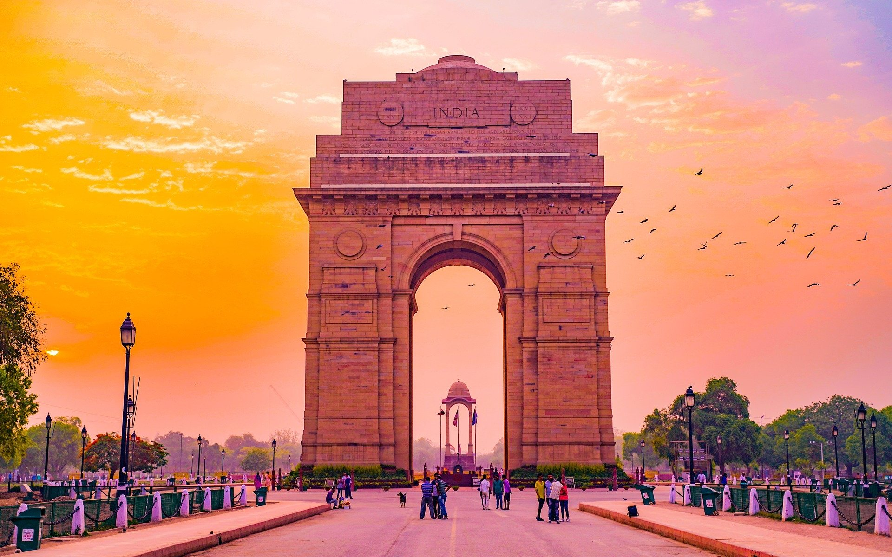

JAIPUR
Typical dishes include Dal Baati Churma, Missi Roti, Gatte ki Sabzi,
Lahsun ki chutney, Ker Sangri, Makke ki Ghat, Bajre ki Ghat, Bajre ki Roti and Laal Maans.
Jaipur is also known for its sweets which include Ghevar,
Feeni, Mawa Kachori, Gajak, Meethi thuli, Chauguni ke laddu, and Moong Thal.

DELHI
The city's classic dishes include butter chicken, dal makhani, shahi paneer,
aloo chaat, chaat, dahi bhalla, kachori,
gol gappe, samosa, chole bhature, chole kulche, gulab jamun, jalebi and lassi.
INDORE
Most popular food items of Indore include poha, kachori, samosa, jalebi,
gulab jamun, rabdi, gajak, imarti, bhel, pani puri, hot dog, egg banjo, moong bhajiya,
moong daal halwa, dahi wada, sabudana khichdi, sabudana wada, dhokla, jeeravan, and sev.